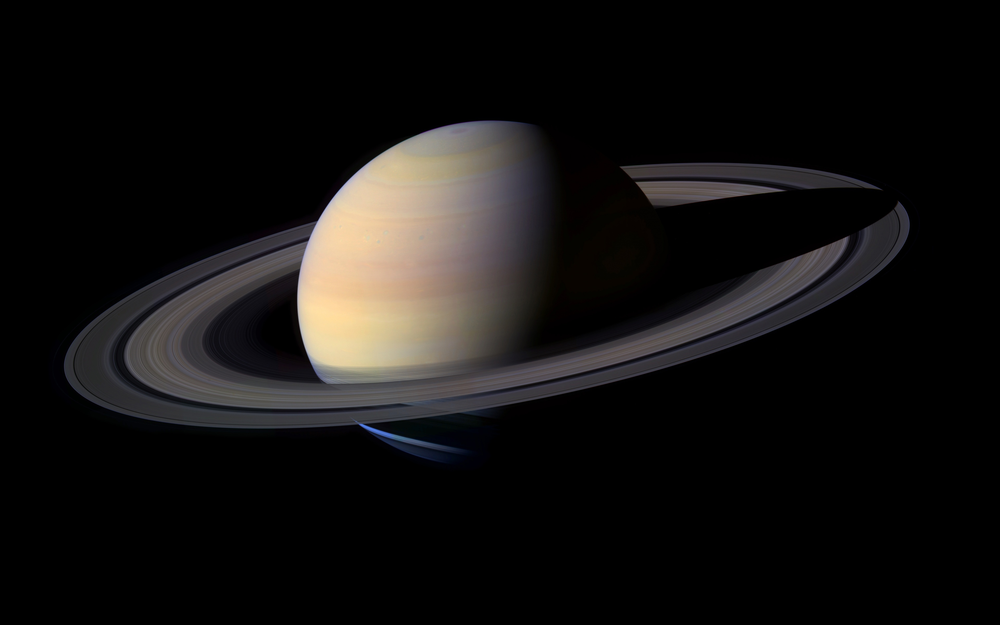

Planetas Incríveis
Marte é o quarto planeta a partir do Sol, o segundo
menor do Sistema Solar. Batizado em homenagem a divindade romana da
guerra, muitas vezes é descrito como o "Planeta Vermelho", porque o
óxido de ferro predominante em sua superfície lhe dá uma aparência
avermelhada. Marte é um planeta rochoso com uma atmosfera fina, com
características de superfície que lembram tanto as crateras de
impacto da Lua quanto vulcões, vales, desertos e calotas polares da
Terra. O período de rotação e os ciclos sazonais de Marte são também
semelhantes aos da Terra, assim como é a inclinação que produz as
suas estações do ano. Marte é o lar do Monte Olimpo, a segunda
montanha mais alta conhecida no Sistema Solar (a mais alta em um
planeta), e do Valles Marineris, um desfiladeiro gigantesco.
Saturno é o sexto planeta a partir do Sol e o
segundo maior do Sistema Solar atrás de Júpiter. Pertencente ao
grupo dos gigantes gasosos, possui cerca de 95 massas terrestres e
orbita a uma distância média de 9,5 unidades astronômicas. Possui um
pequeno núcleo rochoso, circundado por uma espessa camada de
hidrogênio metálico e hélio. A sua atmosfera, também composta
principalmente de hidrogênio, apresenta faixas com fortes ventos,
cuja energia provém tanto do calor recebido do Sol quanto da energia
irradiada de seu centro. Entretanto, estas bandas possuem aspecto
pouco proeminente, com coloração que varia do marrom ao amarelado,
devido à espessa névoa que envolve o planeta, além das camadas de
nuvens. Sazonalmente surgem grandes sistemas de tempestades, além de
vórtices permanentes existentes nos polos.

Netuno é o oitavo planeta do Sistema Solar, o
último a partir do Sol desde a reclassificação de Plutão para a
categoria de planeta anão, em 2006. Pertencente ao grupo dos
gigantes gasosos, possui um tamanho ligeiramente menor que o de
Urano, mas maior massa, equivalente a 17 massas terrestres. Netuno
orbita o Sol a uma distância média de 30,1 unidades astronômicas. O
planeta é formado por um pequeno núcleo rochoso ao redor do qual
encontra-se uma camada formada possivelmente por água, amônia e
metano sobre a qual situa-se sua turbulenta atmosfera, constituída
predominantemente de hidrogênio e hélio.